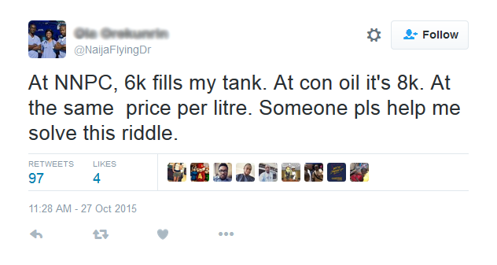
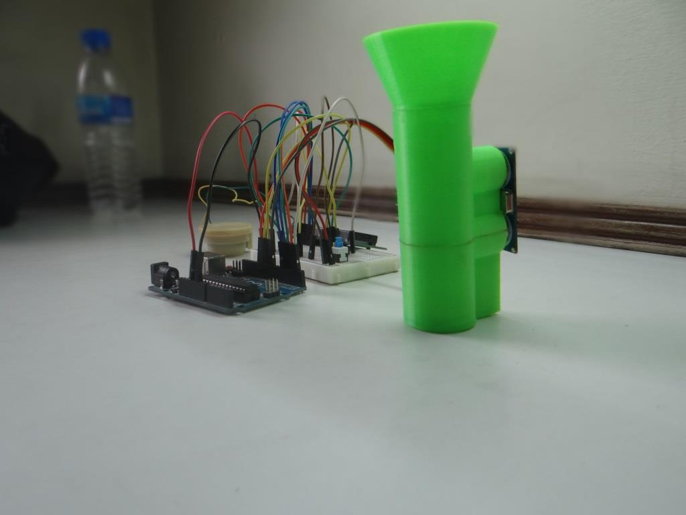

If you live in Nigeria, there's a high chance that you have bought gas at a station and were given an amount lower than you paid for. This happens a lot actually; my favourite picture that tells this story is the tweet below.
My friend and I decided to develop a solution to solve this problem, even tried starting a company. Our first idea was to use a cup at the edge of the tank to measure the flow going into the tank. We hacked this over a weekend and tested it with a number of people.
We quickly observed that it was difficult to use with different types of cars (which had different sizes of gas tank openings). Also, from feedback, many people mentioned that the device would be obvious to the owners of the gas stations who could object to measuring the volume.
So, we developed a different solution: one that looked like a pipe and measured the volume using a different method.
When we tested this, it was over-engineered and cumbersome to use. People could not figure out how to interact with the device. We had put an LCD screen in the prototype, but there was no way to read from it when the device was in the gas tank opening.
With this observation, we developed another prototype that only needed to be installed once. This one worked with an app to show the volume results and was stored inside the car away from the gas tank opening.


This solution worked better and used far less components; we added a third friend to work on the software bit.
Tools: HTML, CSS, SolidWorks, 3D Printing, Cura, Soldering, Arduino, Electronics